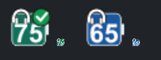
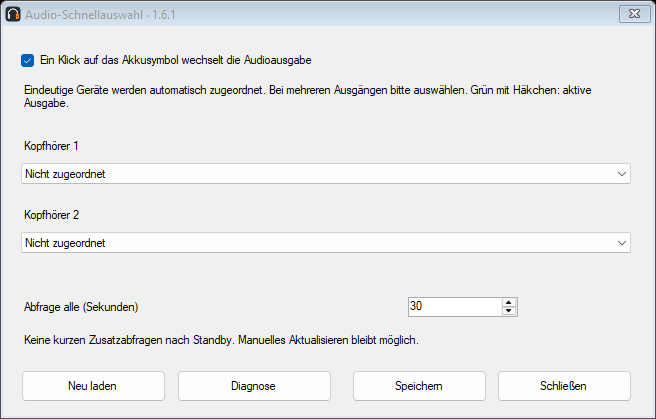
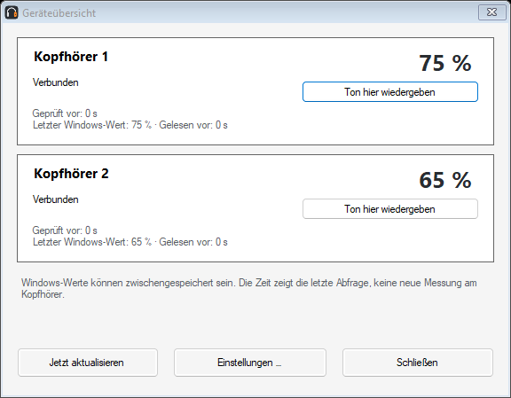

Kopfhörer-Akku
Kopfhörer-Akku
GRATIS · CÓDIGO ABIERTO · WINDOWS 10 / 11
Tus auriculares. La batería a la vista.
Consulta la batería de hasta dos auriculares Bluetooth junto al reloj de Windows, en un widget de escritorio o en ambos. Una pequeña aplicación de Aldikiller.
Versión actual: 1.6.2
Novedades de la versión 1.6.2
Aviso luminoso opcional en la bandeja del sistema, con color personalizable y umbral independiente del 1 al 90 %. En Aviso luminoso puedes probar el icono real durante 30 segundos y ajustar el color en directo. Está desactivado inicialmente y no añade consultas Bluetooth.
Los auriculares desconectados muestran un guion en lugar de un porcentaje actual. Los valores guardados se identifican como el último nivel conocido al pasar el ratón. Si la conexión es desconocida, no se presenta un valor guardado como una lectura actual.
Iconos más suaves, ajustes compactos con el selector de idioma completamente visible y protección mejorada contra inicios duplicados.
Cambiar la salida de audio con un clic
1.6.2 · Haz clic en el icono de batería para cambiar la salida de audio de Windows a esos auriculares. Un círculo verde con una marca blanca indica la salida activa. Los dispositivos con una coincidencia única se asignan automáticamente; si no, elige la salida una vez en la selección rápida de audio. Se conservan las asignaciones manuales.

1.6.1La batería se consulta cada 30 segundos por defecto, ajustable entre 30 y 300 segundos. Sin consultas rápidas adicionales ni avisos rutinarios de progreso. Las actualizaciones se comprueban manualmente o, si lo activas, al iniciar.
Instalador y ZIP portátil · Cinco idiomas · Sin publicidad ni telemetría Ejemplo del widget; los nombres y el idioma son personalizables.
Ejemplo del widget; los nombres y el idioma son personalizables.Las imágenes siguientes muestran la versión anterior 1.6.1; la versión actual es 1.6.2.
Imágenes de la versión 1.6.1
Selección rápida de audio y resumen con datos de ejemplo. El resumen se abre con el botón derecho. Las imágenes muestran la interfaz en alemán; la aplicación también está disponible en español.

Selección rápida de audio (en alemán)
Resumen (en alemán)Personalízalo
Cambia nombres, colores, símbolos, fuentes y la forma de la batería. La vista previa muestra los cambios antes de guardarlos.
Avisos a tiempo
Avisos de batería baja, inicio opcional con Windows y búsqueda voluntaria de actualizaciones. No se instalan actualizaciones automáticamente.
Cambiar el idioma
Abre Einstellungen → Allgemein → Sprache / Language, elige Español y pulsa Speichern. La interfaz cambia al instante y recuerda la selección. El idioma predeterminado es alemán.
Instalación
Descarga el instalador o descomprime completamente el ZIP portátil. Enciende los auriculares, conéctalos a Windows y selecciona hasta dos dispositivos en la aplicación. Si hay entradas duplicadas, elige la que muestra el nivel de batería.
Widget y ajustes
Haz doble clic en un icono para abrir los ajustes y clic derecho para abrir el menú. Bajo Pantalla y widget puedes elegir la bandeja, el widget o ambos. Ajusta tamaño, posición, transparencia, fuentes y disposición. Para un fondo transparente, pon la opacidad del fondo y el grosor del borde a cero.
Requisitos y límites
Windows 10 desde la compilación 19041 o Windows 11, x64, con .NET Framework 4.8. Solo se muestran los datos que proporcionan Windows y el controlador. Probado con JBL Live 770NC y JLab Rewind 2. Otros modelos aún no están confirmados. Los datos pueden llegar con retraso. Los archivos aún no tienen firma digital. Windows puede mostrar una advertencia.
Ayuda
Si falta un dispositivo, comprueba la conexión de Windows, vuelve a seleccionarlo y espera el siguiente intervalo. Busca los iconos ocultos bajo ^ junto al reloj. Los avisos requieren una conexión confirmada; No molestar puede ocultarlos.
Privacidad y licencia
Sin publicidad ni telemetría. Los ajustes permanecen en tu ordenador. La búsqueda opcional de actualizaciones está desactivada inicialmente. Al usarla, GitHub recibe tu IP y la versión de la aplicación, pero no nombres de dispositivos ni niveles de batería. Código abierto bajo licencia MIT, sin garantía en la medida permitida por la ley.
Desinstalación
Elimina la versión instalada desde Configuración de Windows → Aplicaciones. Los ajustes permanecen en %LOCALAPPDATA%\KopfhoererAkku. Para la versión portátil, desactiva el inicio automático, cierra la aplicación y elimina su carpeta.
Comparte el modelo de auriculares, las versiones de Windows y de la aplicación y los pasos para reproducir el problema. No publiques direcciones Bluetooth ni datos privados.